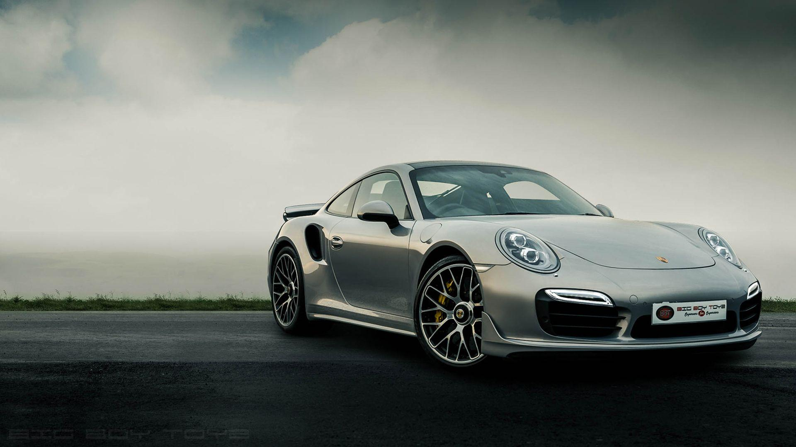
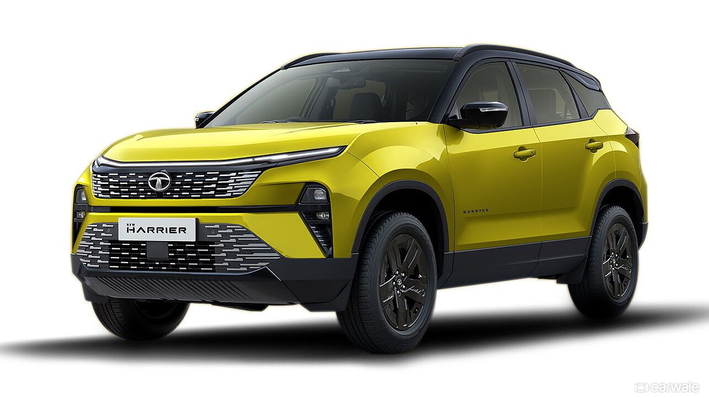

The modern automobile is a complex technical system
employing subsystems with specific design functions.Some of these consist of thousands
of component parts that have evolved from breakthroughs in existing technology or from new technologies.

The Chevrolet: 100 Years of product Innovation is a synopsis of Chevrolet’s history, their marketing strategy product innovation and marketing position. The case highlights how Chevy has fared against competition and how they have been able to sustain in the market. Chevy carries a strong brand name and has a loyal consumer base.
Big Boy Toyz (BBT) started in 2009 as a benchmark model for the Pre-Used, or how we prefer to see it as, Pre-Loved Car Brand. The mission was simple, direct and drove effect - delivering a new dimension of luxury while standardising & raising platforms for the used car market in India.
The latest iteration of the Tata Harrier incorporates
sharp styling elements that actually complement the
overall SUV stance.
And then, there's the long list of
contemporary features,a five-star safety rating and an
already potent
powertrain that collectively make it a
great package.